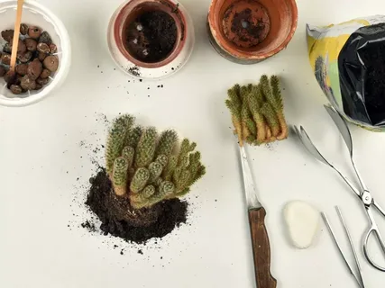

Кактусы и суккуленты
Кактусы и суккуленты — это удивительная группа растений, которые научились выживать в самых суровых условиях. Их способность накапливать воду в тканях делает их идеальными питомцами для забывчивых хозяев и начинающих цветоводов.

Особенности ухода за кактусами и суккулентами
Хотя кактусы и суккуленты считаются неприхотливыми растениями, правильный уход обеспечит их здоровый рост и даже цветение. Эти растения происходят из засушливых регионов, поэтому их основные потребности — обилие света и осторожный полив.
Освещение
Большинство кактусов и суккулентов нуждаются в ярком прямом солнечном свете не менее 4-6 часов в день. Южные окна — идеальное место для их размещения. При недостатке света растения вытягиваются и теряют свою декоративную форму.

Полив
Главное правило — лучше недолить, чем перелить. В период активного роста (весна-лето) поливайте, когда грунт полностью просохнет. Зимой большинство видов находятся в периоде покоя и полив следует сократить до минимума — 1-2 раза в месяц.
Температура
Летом кактусы хорошо переносят высокие температуры, а зимой им необходима прохлада (10-15°C) для закладки цветочных почек. Резкие перепады температуры могут быть вредны, особенно для нежных суккулентов.
Почва и пересадка
Для кактусов и суккулентов необходим хорошо дренированный грунт. Обычная цветочная земля им не подходит — она слишком влагоемкая. Идеальный состав: специализированный грунт для кактусов с добавлением песка, перлита или мелкого гравия.
Пересаживают растения весной, когда корни полностью оплетают земляной ком. Молодые экземпляры пересаживают ежегодно, взрослые — раз в 2-3 года. После пересадка не поливайте растение 5-7 дней, чтобы поврежденные корешки зажили.
Размножение кактусов и суккулентов
Эти растения легко размножаются несколькими способами, что делает их особенно привлекательными для коллекционеров.
Детками (отростками)
Многие кактусы образуют деток, которые можно аккуратно отделить от материнского растения, подсушить 2-3 дня и посадить в легкий субстрат.
Листовыми черенками
Суккуленты типа эхеверий или очитков легко размножаются листьями. Лист аккуратно отделяют, подсушивают и кладут на влажный грунт до появления корешков.
Семенами
Самый длительный, но интересный способ. Требует стерильности и терпения, так как рост сеянцев очень медленный.

Интересные факты
Кактусы и суккуленты — не только красивые, но и удивительные растения с уникальными особенностями:
- • Некоторые кактусы могут жить до 200 лет и достигать высоты 20 метров
- • Самый маленький кактус — блоссфельдия — имеет диаметр всего 1-2 см
- • Суккуленты могут терять до 60% влаги и восстанавливаться после полива
- • Колючки кактусов — это видоизмененные листья, а фотосинтез происходит в стебле
- • Ночью кактусы поглощают углекислый газ, а днем используют его для фотосинтеза
Коллекционирование кактусов и суккулентов — увлекательное хобби, которое может длиться всю жизнь. Начинайте с неприхотливых видов и постепенно расширяйте свою коллекцию!